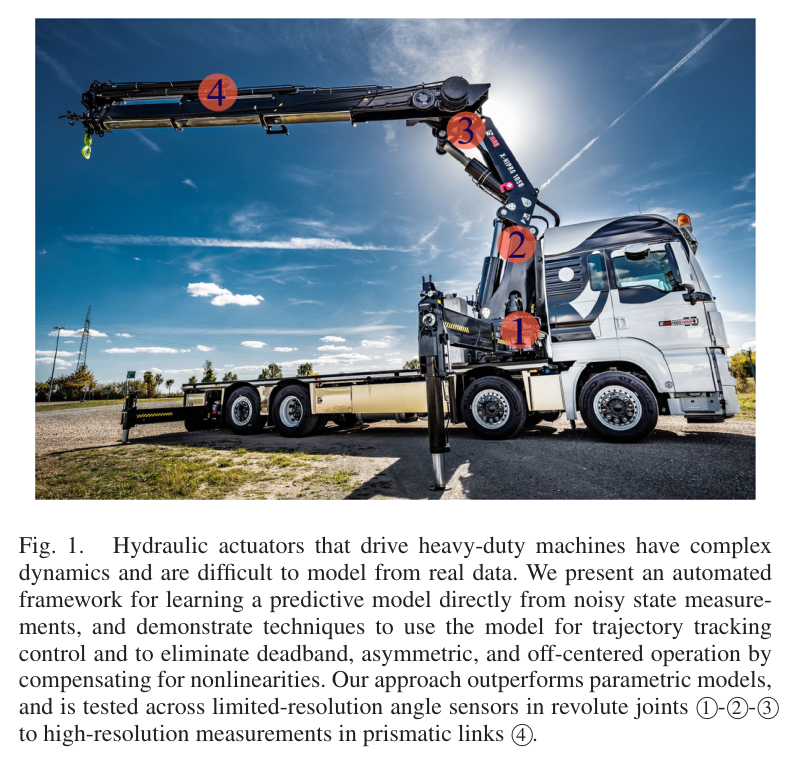
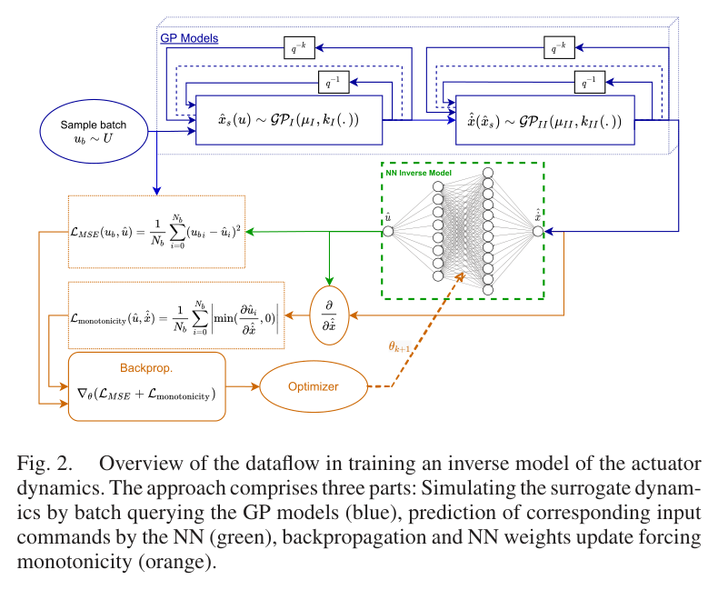
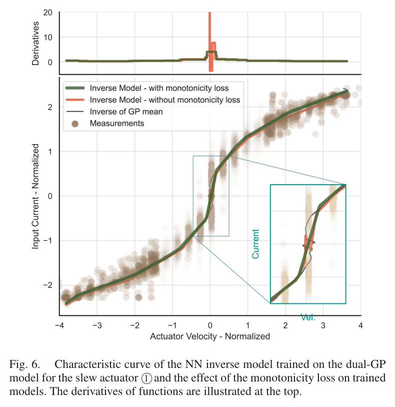
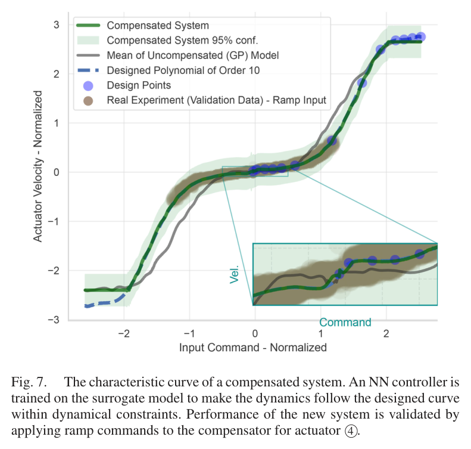
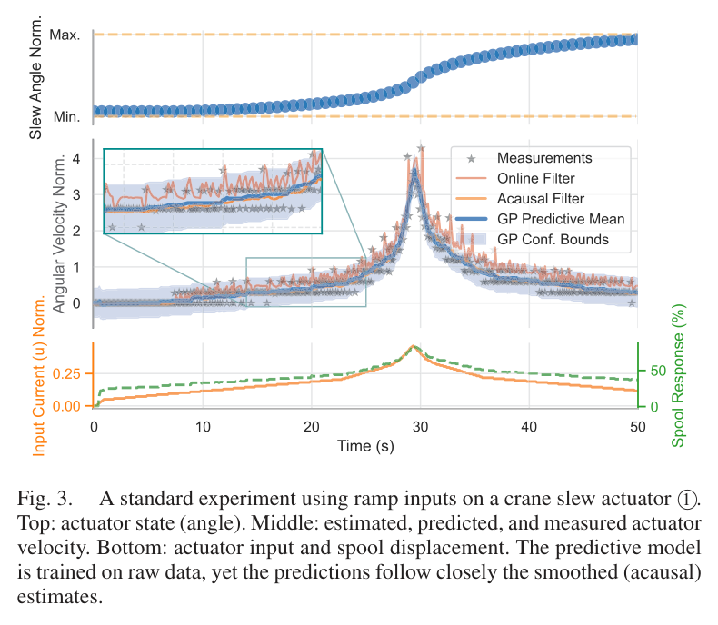
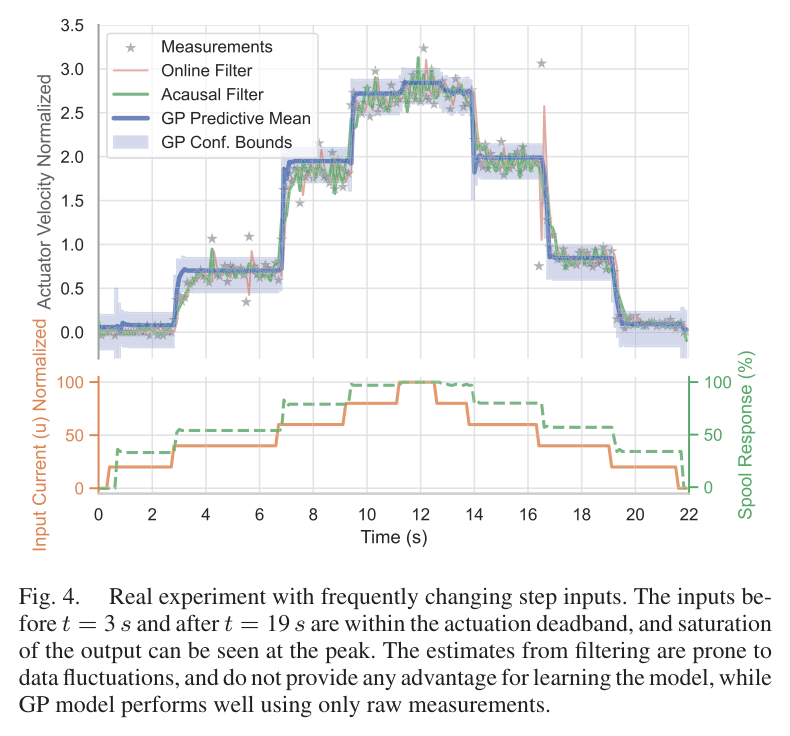
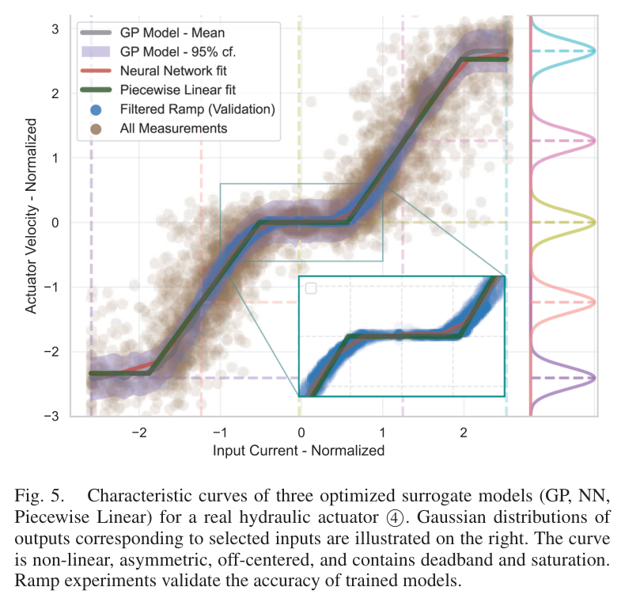
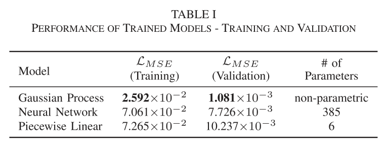
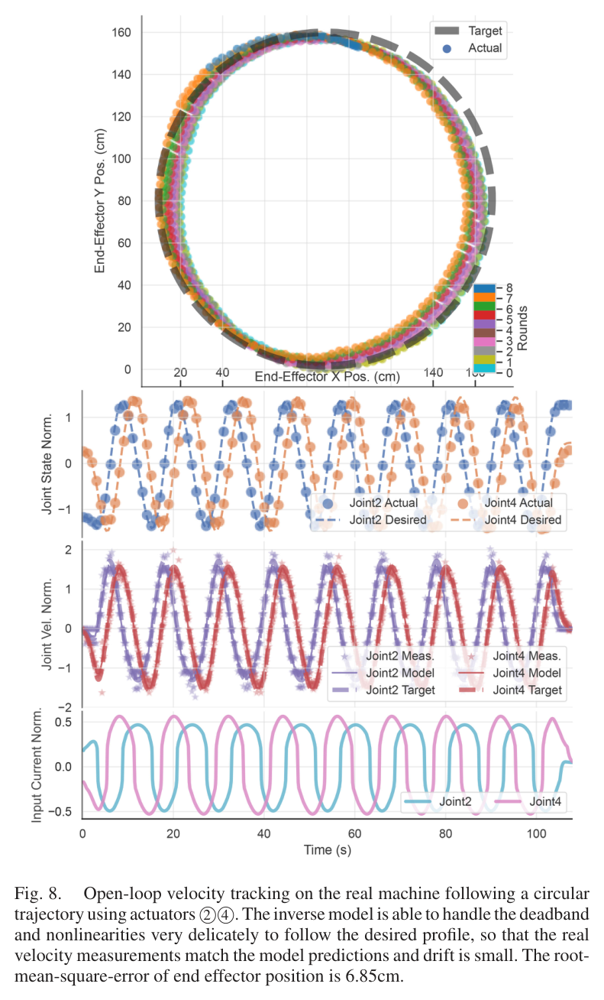

Abstract / 초록
이 연구는 실제 로더 크레인의 유압 액추에이터 네 개를 대상으로, 필터링하지 않은 위치 측정에서 명령 전류와 속도의 관계를 학습한다. 전류에서 스풀 변위로, 스풀 변위에서 상태 변화율로 이어지는 두 개의 가우시안 프로세스(GP)를 직렬로 연결하고, 과거 명령 입력을 사용해 지연을 다룬다.
제시된 검증에서 GP의 평균제곱오차(MSE)는 신경망의 약 1/7, 구간선형 모델의 약 1/10이었다. 학습한 모델은 단조성 손실을 적용한 신경망 역모델과 보상기로 이어졌으며, 두 액추에이터의 개루프 원 궤적 추종에서 말단 RMSE 6.85 cm를 기록했다. 다만 제한된 입력 범위와 압력·부하 입력의 부재는 적용 범위를 판단할 때 함께 고려해야 한다.
먼저 읽는 세 가지 발견
-
위치를 미분한 거친 관측값도 학습에 쓸 수 있다.
저해상도 위치 측정에서 계산한 변화율을 잡음이 있는 관측으로 취급한다. 학습용 사전 필터링 없이도 밸브의 비선형 특성을 추정했다.
-
특성곡선 학습은 제어 명령 생성으로 이어진다.
GP에 질의해 만든 자료로 역모델을 학습한다. 단조성 손실은 데드밴드 주변에서 역모델의 기울기가 비물리적으로 변하는 현상을 억제한다.
-
실차 검증은 유망하지만, 일반화 범위는 한정돼 있다.
개루프 추종은 피드포워드 모델의 가능성을 보여준다. 부하가 달라지는 작업이나 정밀 제어의 성능까지 입증한 결과로 확대해 읽어서는 안 된다.
깨끗한 속도 신호가 없는 현장
유압 밸브는 명령에 비례해 매끄럽게 움직이지 않는다. 작은 명령에는 반응하지 않는 데드밴드가 있고, 양방향 응답은 비대칭이며, 큰 명령에서는 포화가 나타난다. 실제 장비에서는 여기에 센서의 낮은 분해능, 측정 잡음, 지연과 진동이 겹친다.
연구가 비교 대상으로 삼은 간결한 물리·구간선형 모델은 이런 특성을 충분히 표현하기 어렵다. 신경망은 표현력이 높지만 데이터가 부족한 구간에서 성능이 떨어질 수 있다. 측정 불확실성을 명시적으로 다루지 않는 적합 방식에서는 사전 필터링과 완만한 램프 입력에 의존하기 쉽다.
핵심 질문은 실용적이다. 장비마다 긴 식별 실험을 반복하지 않고, 짧은 현장 데이터에서 제어에 쓸 만한 모델을 얻을 수 있는가?

| 밸브·입력 | 직접 구동 비례 스풀 밸브 · 솔레노이드 전류 |
|---|---|
| 위치 측정 | 회전 관절 ①–③: 각도 분해능 0.1° 직동 링크 ④: 변위 분해능 1 mm |
| 샘플링 | CAN으로 50 Hz 이상 수집 후 10 Hz로 낮춤 |
| 데이터량 | 액추에이터당 약 20분 · 학습과 검증에 절반씩 배분 |
| 검증 기준값 | 램프 입력 자료에 비균일 Savitzky–Golay 필터 적용 · 창 51, 11차 |
하나의 복잡한 관계를
두 개의 GP로 나누다
관측값은 인접한 위치 측정의 차이를 실제 시간 간격으로 나눈 이산 변화율이다. 이를 실제 함수값에 잡음이 더해진 값으로 보고 GP를 학습한다. 시간 간격을 직접 사용하므로 비균일하게 들어오는 측정도 다룰 수 있다.
모델의 구조에는 유압 시스템의 단계가 반영된다. 첫 번째 GP는 명령 전류에서 스풀 변위로 이어지는 관계를, 두 번째 GP는 스풀 변위에서 액추에이터의 상태 변화율로 이어지는 관계를 학습한다.
솔레노이드·스풀 동역학과 명령 지연을 표현하는 단계
유량·기구의 관계와 비선형 특성곡선을 표현하는 단계
이렇게 관계를 나누면 차원을 줄이고 각 단계의 특성을 해석하기 쉬워진다. 지연뿐 아니라 포화, 중심 이탈, 양방향 비대칭도 모델을 통해 살펴볼 수 있다.
지연은 과거 명령을 함께 넣어 다룬다
입력에는 현재 명령만이 아니라 최근 명령의 이력이 들어간다. 최대 5샘플의 지연을 고려하고, 입력별 커널 길이척도를 최적화하는 자동 관련성 판정(ARD)으로 어떤 시점의 명령이 출력과 관련되는지 파악한다.
- uk
- 최근 d개 명령으로 구성한 입력 벡터: {uk−d+1, …, uk}
- Λ
- 입력별 길이척도에 대응하는 커널 계수. 과거 명령의 관련성을 반영한다.
- K̂UU
- KUU + σε2I. 관측 잡음을 포함한 공분산 행렬.
- φ
- Λ, 커널 크기 σk, 잡음 크기 σε로 이루어진 하이퍼파라미터 집합.
예측값과 불확실성을 함께 계산한다
표기 안내: r = y − μ(U). 평균 함수를 0으로 두면 r = y가 된다. 위 분산은 잠재 함수에 대한 값이며, 새로운 잡음 관측의 분산에는 관측 잡음 항이 추가된다. 수식은 읽기 쉽도록 표기를 정리했다.
잡음을 먼저 지워야 할 대상으로만 보지 않고,
학습할 확률 모형 안에 포함한다.
GP는 커널과 잡음 가정 아래에서 신호의 관계와 불확실성을 함께 추정한다. 이 연구의 결과는 그러한 접근이 거친 위치 측정에서도 유효할 수 있음을 보여준다. 모든 종류의 잡음이나 모든 운전 조건에서 필터가 불필요하다는 뜻은 아니다.

특성곡선을 뒤집는 일에는
물리적 조건이 필요하다
전류에서 속도로 가는 모델을 얻었다면, 제어에서는 반대로 원하는 속도에 필요한 전류를 구해야 한다. 그러나 GP가 주는 것은 예측 분포이며, 평균 곡선도 데드밴드에서는 일대일 대응이 아니다. 단순히 축을 바꾸는 것만으로 안정적인 역모델이 완성되지는 않는다.
연구진은 GP 질의로 만든 자료를 이용해 신경망 역모델을 학습하고, 명령 오차에 더해 단조성 손실을 적용한다. 원하는 속도가 증가할 때 예측 명령이 감소하는 구간에 벌점을 주는 방식이다.
Nb는 배치 크기, û는 역모델이 예측한 명령, v̂는 역모델에 입력하는 속도(원 노트의 ẋ̂)다. 기울기는 자동 미분으로 계산한다.
이 손실은 “명령이 커질수록 유량이 같거나 증가한다”는 관계를 역모델 학습에 반영한다. 다만 학습 지점에서의 벌점은 전체 입력 영역에 대한 엄밀한 단조성 보증과는 구분해야 한다.
계산 구조도 실용성을 고려했다. 역전파가 GP를 통과하지 않도록 하고 GPU에서 질의를 배치 처리해 시간과 메모리를 줄였다. 제공된 요약에 따르면 역모델 학습은 액추에이터당 1분 미만이며, 역모델·보상기 학습은 분 단위로 수행된다.


실험은 무엇을 보여줬나
증거 1 — 저해상도 위치에서도 속도 관계를 추정했다
선회 관절의 램프 실험에서는 원시 측정으로 학습한 GP 예측이 사후 필터의 속도 추정과 유사한 경향을 보인다. 제공된 요약은 0.1° 분해능 조건에서 온라인 필터만으로는 속도를 충분히 포착하기 어렵다고 설명한다.

직동 액추에이터의 잦은 스텝 입력에서는 데드밴드와 포화가 함께 드러난다. 필터 추정이 흔들리는 구간에서도 GP는 원시 관측으로부터 입력과 출력의 관계를 추정한다.

증거 2 — 비교 모델보다 검증 MSE가 낮았다
직동 ④의 특성곡선 비교에서는 GP가 비선형, 양방향 비대칭, 중심 이탈, 데드밴드와 포화를 함께 표현한다. 구간선형 모델은 데드밴드를 과대 추정하고 포화를 과소 추정했으며, 신경망은 데이터가 많은 데드밴드는 포착하지만 포화 표현에서 한계를 보였다.

| 모델 | 학습 MSE | 검증 MSE | 파라미터 |
|---|---|---|---|
| 가우시안 프로세스 | 2.59 × 10−2 | 1.08 × 10−3 | 비모수 |
| 신경망 16 × 16 ReLU |
7.06 × 10−2 | 7.73 × 10−3 | 385 |
| 구간선형 | 7.27 × 10−2 | 10.24 × 10−3 | 6 |
이 표에서 GP의 검증 MSE는 신경망의 약 1/7.2, 구간선형 모델의 약 1/9.5다. “약 1/7, 약 1/10”이라는 요약은 이 비율을 반올림한 표현이다. 이는 MSE의 비율이며, RMSE나 실제 위치 오차의 비율을 뜻하지 않는다.

증거 3 — 피드백 없이 두 관절을 함께 움직였다
마지막 검증은 모델 적합을 넘어 실제 궤적 생성으로 이어진다. 액추에이터 ②와 ④를 함께 구동하고, 역모델이 계산한 명령만으로 말단이 원 궤적을 따르도록 했다. 피드백이 없는 조건에서 보고된 말단 RMSE는 6.85 cm다.

좋은 결과의 경계까지 읽기
-
검증한 입력 범위는 전체의 약 40% 남짓이다.
물리적 제약으로 램프 검증이 입력 전 범위를 덮지 못했다. 나머지 영역의 정확도는 이 실험으로 확인되지 않았다.
-
압력과 부하는 모델 입력에 없다.
특성곡선은 무부하에 가까운 조건의 결과다. 부하가 큰 굴착이나 압력 조건이 바뀌는 운전에서 같은 곡선을 그대로 사용할 수 있는지는 별도 검증이 필요하다.
-
개루프 성능이 정밀 작업의 완성을 뜻하지는 않는다.
6.85 cm는 피드백 없는 원 궤적 실험의 RMSE다. 정밀 작업에는 피드백을 결합하고, 작업별 허용 오차와 외란 조건에서 성능을 평가해야 한다.
HR35에는 어떻게 연결할까
이 절은 노트 작성자의 HR35 관점 해석과 후속 실험 제안이다. 원 논문이 HR35에서 입증한 결과는 아니다.
가장 직접적인 적용 후보는 조이스틱 명령 → 관절 속도의 특성곡선 식별이다. 짧은 현장 데이터로 데드밴드, 비대칭, 포화를 추정할 수 있다면 트윈 장부의 데드밴드 측정값과 유량 이득을 대조하는 출발점이 된다. 다만 조이스틱 명령과 실제 밸브 전류 사이의 관계도 함께 확인해야 한다.
Hypothesis / 검증할 가설
더 높은 분해능은 유리한 조건일 수 있다
노트에 기재된 HR35 경사계 사양은 0.01°·20 Hz다. 각도 분해능은 논문의 회전 관절 센서 0.1°보다 세밀하지만, 이것만으로 더 좋은 식별 성능을 보장하지는 않는다. 실제 잡음, 시간 동기화, 센서 지연, 입력 범위와 부하 조건까지 비교해야 한다.
같은 데이터로 비교하고, 확장은 분리해 검증한다
노트는 기존의 여과 회귀 접근과 무필터 GP를 각속도 잡음 문제에 대한 두 후보로 제안한다. HR35의 축 G에서는 동일한 데이터와 검증 구간으로 비교하는 것이 판단에 도움이 된다. 어느 방법이 유리한지는 센서 조건과 실제 운전 데이터로 확인해야 한다.
단조성 검사는 트윈 밸브 맵의 검토 항목으로 활용할 수 있다. 다른 조건이 일정할 때 명령이 커지는데 유량이 감소하는 구간은 모델이나 자료를 점검할 신호다. 압력·부하가 바뀌는 자료에서는 그 영향을 분리해 해석해야 한다.
부하 의존성을 다루려면 압력 정보를 GP 입력에 추가하는 확장이 후보가 된다. 이는 노트가 축 B의 후속 과제로 제시한 방향이며, 이 논문의 검증 범위를 넘어서는 별도 설계·실험 과제다.
Evaluation checklist / 후속 실험 점검표
- 명령·위치·시간 기록을 맞추고 실제 지연과 누락을 확인한다.
- 양방향 데드밴드와 포화를 포함한 입력 범위를 확보한다.
- 동일한 검증 자료로 여과 회귀와 무필터 GP를 비교한다.
- 밸브 맵의 단조성과 기존 데드밴드·유량 이득 값을 대조한다.
- 부하 조건을 나누어 평가한 뒤 압력 입력의 효과를 검증한다.
Takeaway / 독자가 가져갈 한 가지
현장 데이터의 거칠음도
모델 설계의 일부가 될 수 있다
이 연구의 핵심은 잡음 모형, 입력 이력, 물리적 단조성을 함께 사용해 짧은 실차 데이터에서 제어에 쓸 수 있는 관계를 끌어냈다는 데 있다. 두 개의 GP가 특성곡선을 배우고, 신경망 역모델이 그 관계를 명령으로 바꾼다.
다음 장비에 적용할 때의 출발점도 분명하다. 같은 데이터에서 기존 방법과 비교하고, 검증된 입력·부하 범위를 명시하는 것. 그 과정을 거치면 이 접근은 현장 식별과 피드포워드 제어를 연결하는 실용적인 후보가 된다.
원문과 출처 안내
Abdolreza Taheri, Pelle Gustafsson, Marcus Rösth, Reza Ghabcheloo, Joni Pajarinen
HIAB Control Systems R&D · Tampere University · Aalto University
IEEE Robotics and Automation Letters, 7(4), 9525–9532, 2022.
- 이 글은 제공된 Obsidian 논문 요약 노트를 바탕으로 구성한 한국어 해설이다. 수치와 실험 조건은 해당 노트에서 옮겼으며, 원문을 별도로 재검증한 보고서는 아니다.
- 그림 1–8과 표 1은 제공된 논문 이미지 자산이다. 그림 번호는 원문 기준을 유지하고, 설명은 한국어로 재구성했다. 원 논문의 라이선스는 제공된 서지정보 기준 CC BY 4.0이다.
- 검증 MSE 비율 약 1/7.2와 약 1/9.5는 제시된 표의 수치로 계산했다. 수식은 표기를 정리했으며, GP 예측 평균에는 평균 함수의 처리를 명시했다.
- HR35 사양과 적용 제안은 노트 작성자의 맥락이다. 노트가 언급한 “ISARC 2002”와 “ETH 2026”은 구체적인 서지정보가 제공되지 않아, 이 글에서는 검증된 비교 근거로 사용하지 않았다.
- 본문의 강조 인용문과 공유용 문장은 이해를 돕기 위한 편집 문구이며, 논문 저자의 직접 인용이 아니다.